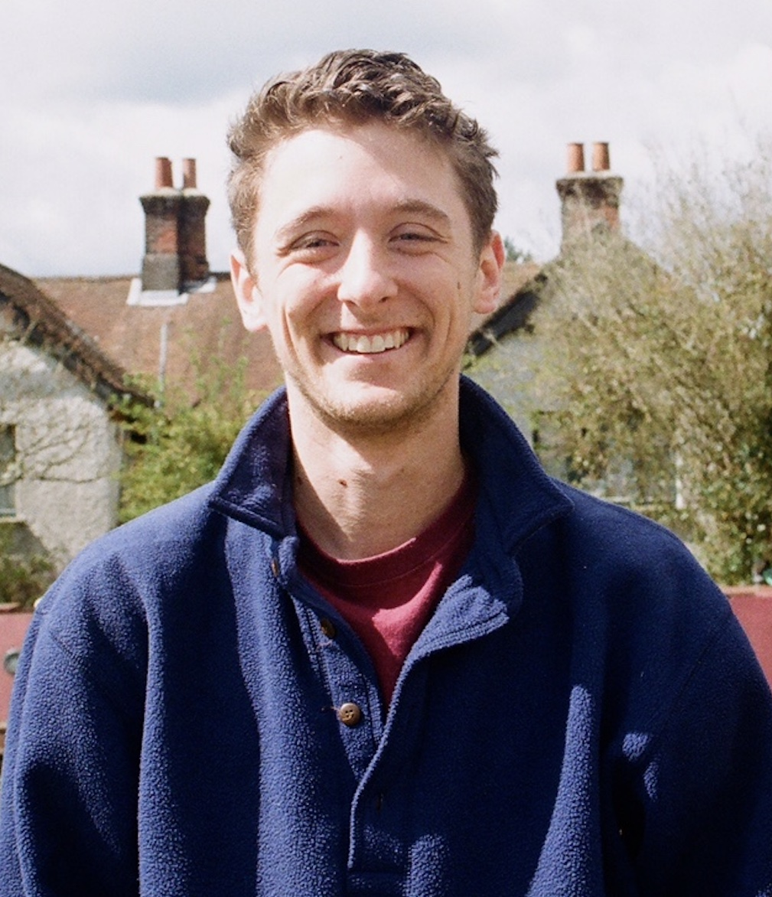

Aidan Penn

I'm a PhD student in NYU's philosophy department. Before NYU, I received my BPhil from Oxford (2019) and my BA from Bowdoin College (2017).
Most of my work is in ethics, decision theory, and epistemology. My current research examines the ethics of risk, the ethics of distribution, incommensurability, prerogatives, constraints, and higher-order uncertainty. I also work on AI ethics.
You can email me at aidan"dot"penn"at"nyu"dot"edu. I am also on PhilPeople.
Here is my CV.
Papers
- Opaque Options (with Kacper Kowalczyk). Philosophical Studies 181 (2024): 1837–1849.
- [a paper on prerogatives and risk] (under review)
- [a paper on higher-order uncertainty in ethics] (under review)
- [a paper on incompleteness and interpersonal aggregation] (in progress)
- [a paper on AI fairness] (in progress)
Teaching
As primary instructor
- Epistemology (as primary instructor, Summer 2024)
- Metaethics (as primary instructor, Summer 2022)
As recitation instructor
- Texts and Ideas: The Meaning of Life (Spring 2023, primary instructor: Jessica Moss)
- Ethics (Fall 2022, primary instructor: Sanford Diehl)
- Ethics and Society (Spring 2022, primary instructor: Sophia Dandelet)
- Political Philosophy (Fall 2021, primary instructor: Daniel Viehoff)